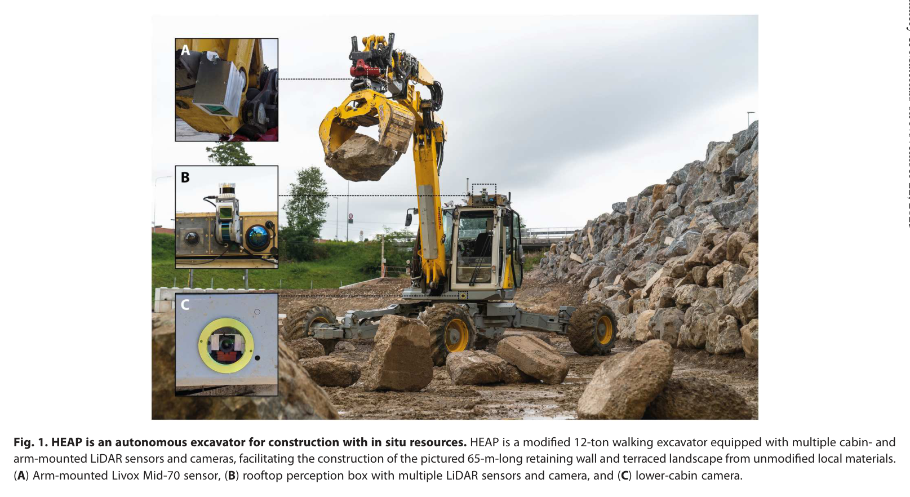
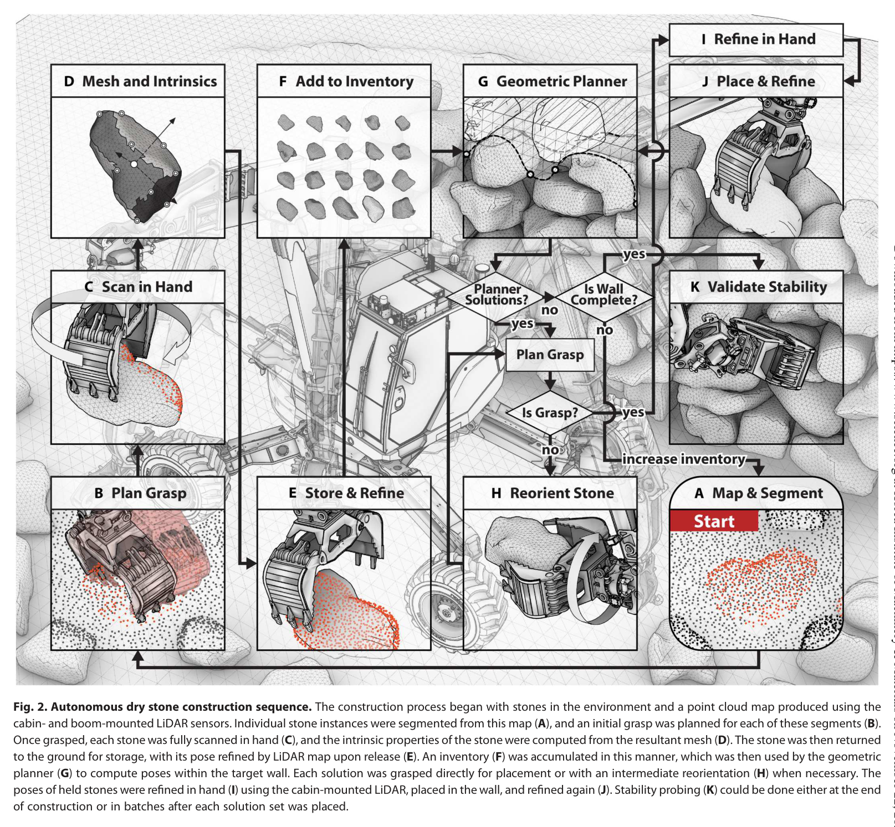
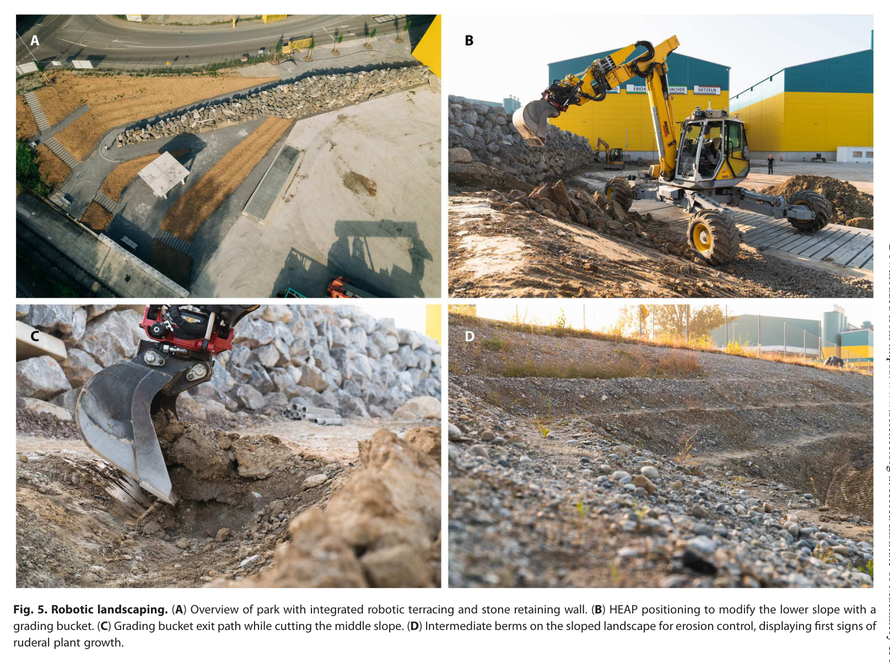
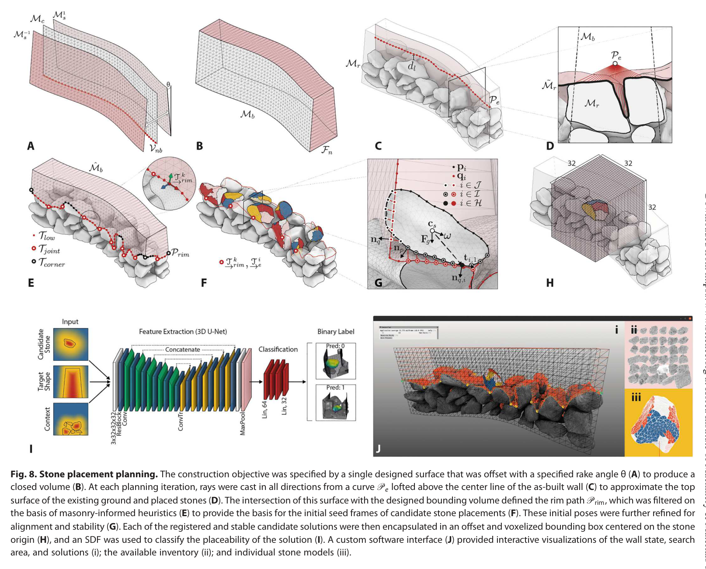
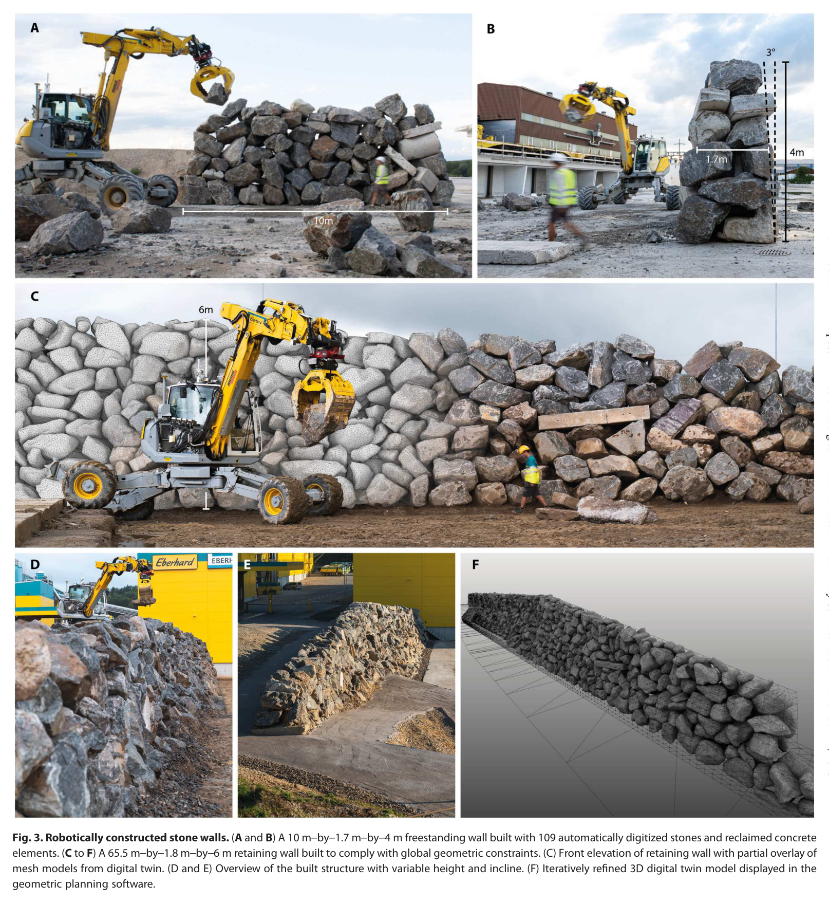
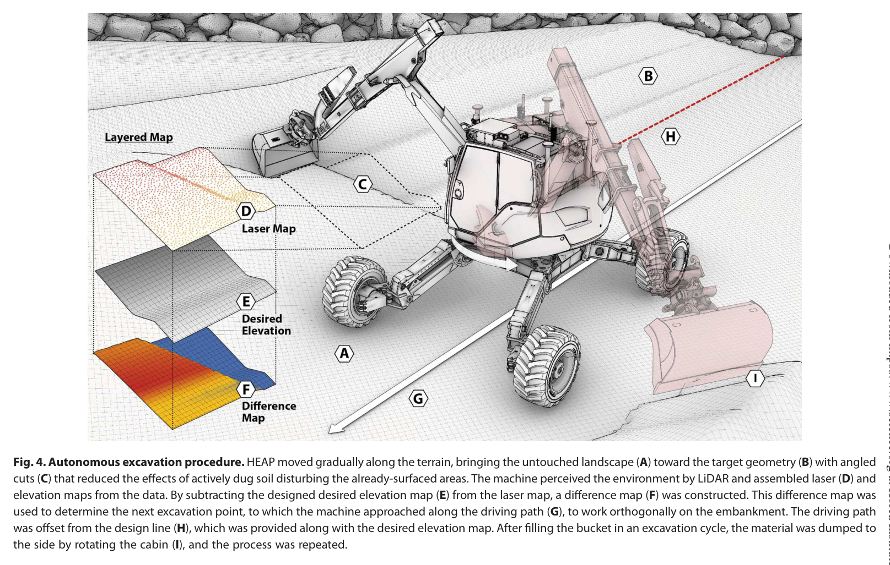
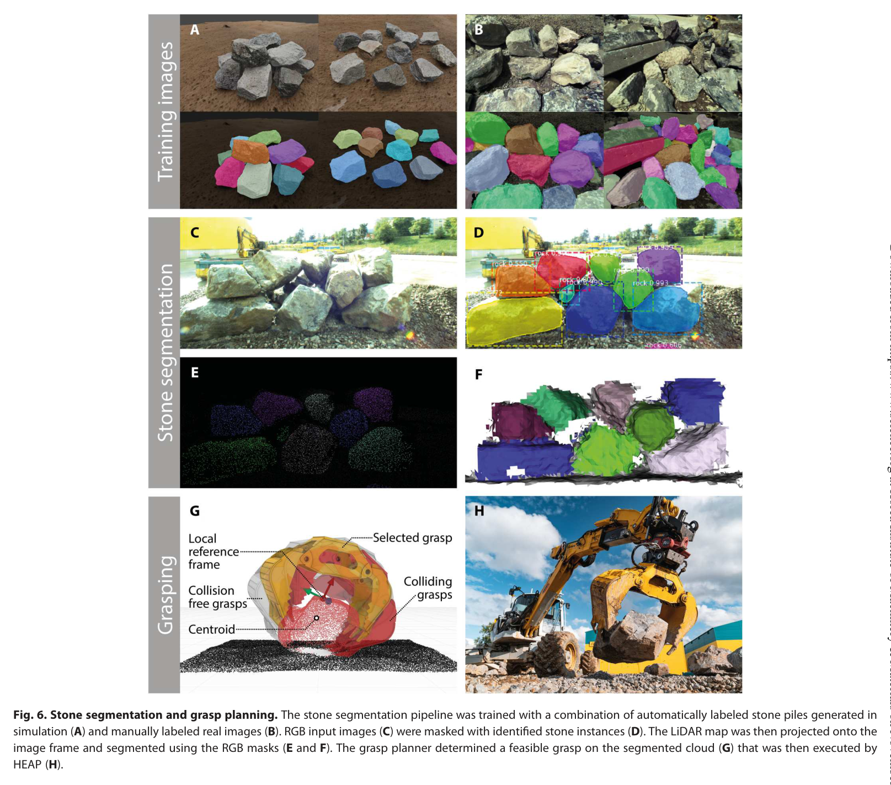
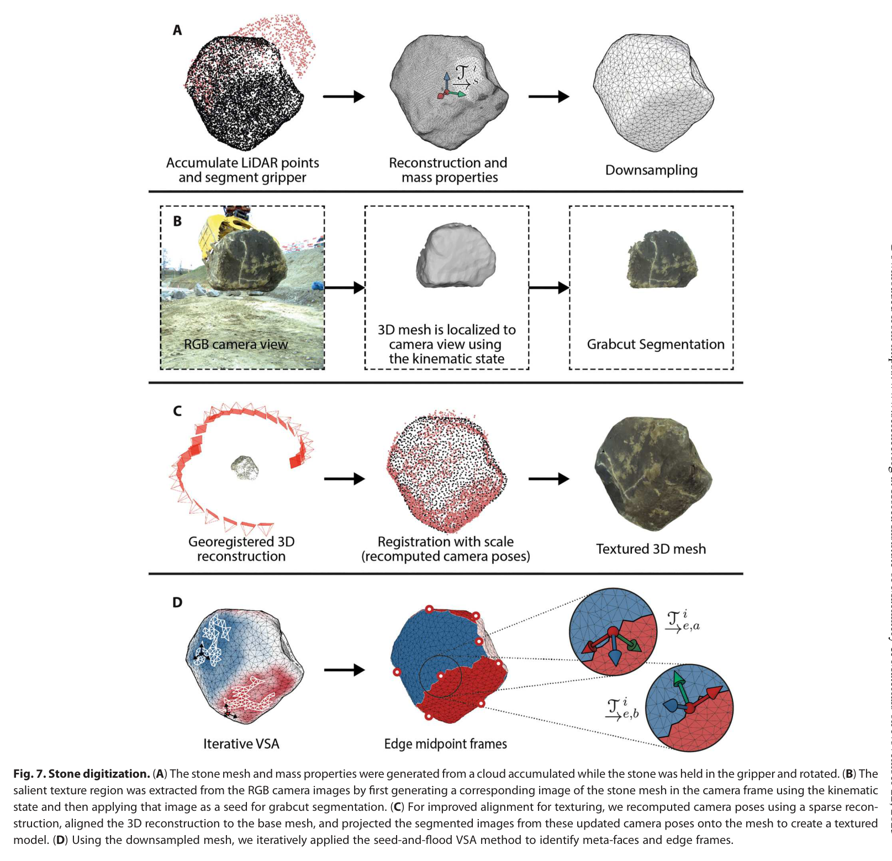

A framework for robotic excavation and dry stone construction using on-site materials
한줄 요약 — RGB-LiDAR 인식, 특수 그리퍼, in-hand 3D scan, 후보 자세 생성, TICR 정합, learned SDF 안정성 평가, 재파지·배치·probe, 고도 폐루프 굴착을 하나의 대형 로봇 공정으로 묶어 가공하지 않은 현장 돌과 흙으로 실제 규모 구조물을 건설했다.
1.연구 배경 및 동기
현장에서 나온 불규칙 돌과 흙을 폐기물 대신 구조재로 사용하는 로봇 건설
건설산업은 세계 GDP의 약 13%를 차지하지만 시멘트는 인위적 CO₂ 배출의 8~9%, 에너지 사용의 2~3%에 관련되고 건설·철거 폐기물은 연 30억 톤을 넘는다. 현장 굴착에서 나온 흙과 바위를 그대로 구조재로 쓰면 운송과 시멘트 사용을 줄일 수 있지만, 가공하지 않은 석재는 형상·질량·파지점이 모두 다르고 건식 석축의 안정성은 접촉면과 쌓기 순서에 민감하다. 사람 석공은 작은 hearting stone과 wedge를 쓰며 미세 조정하지만, 1톤급 돌을 다루는 굴착기는 정확한 geometry acquisition과 안정성 판단이 필요하다.
논문은 개별 알고리즘보다 현장 자재 순환 전체를 다룬다. 굴착기가 돌무더기를 스캔하고 각 돌을 분할·파지한 뒤 공중에서 천천히 회전시켜 완전한 3D mesh를 얻는다. 물성·형상을 inventory에 저장하고 목표 wall mesh의 다음 빈 영역에 맞는 돌과 자세를 계산한다. 필요하면 바닥에서 재정렬해 더 좋은 grasp를 만들고, 목표 위치에 놓은 뒤 재측정과 안정성 probe를 수행한다. 동시에 주변 토사를 목표 terrace elevation으로 굴착·성토해 wall과 지형을 함께 완성한다.

원문 Figure 1 · PDF p.2 — Fig. 1. HEAP is an autonomous excavator for construction with in situ resources. HEAP is a modified 12-ton walking excavator equipped with multiple cabin- and arm-mounted LiDAR sensors and cameras, facilitating the construction of the pictured 65-m-long retaining wall and terraced landscape from unmodified local materials. (A) Arm-mounted Livox Mid-70 sensor, (B) rooftop perception box with multiple LiDAR sensors and camera, and (C) lower-cabin camera.

원문 Figure 2 · PDF p.5 — Fig. 2. Autonomous dry stone construction sequence. The construction process began with stones in the environment and a point cloud map produced using the cabin- and boom-mounted LiDAR sensors. Individual stone instances were segmented from this map (A), and an initial grasp was planned for each of these segments (B). Once grasped, each stone was fully scanned in hand (C), and the intrinsic properties of the stone were computed from the resultant mesh (D). The stone was then returned to the ground for storage, with its pose refined by LiDAR map upon release (E). An inventory (F) was accumulated in this manner, which was then used by the geometric planner (G) to compute poses within the target wall. Each solution was grasped directly for placement or with an intermediate reorientation (H) when necessary. The poses of held stones were refined in hand (I) using the cabin-mounted LiDAR, placed in the wall, and refined again (J). Stability probing (K) could be done either at the end of construction or in batches after each solution set was placed.
선행 연구의 한계
산업 로봇 조적은 규격 블록과 고정 작업셀을 전제로 하므로 수 톤급 불규칙 현장 석재와 야외 지형에 직접 적용하기 어렵다.
외부에서 한 번 스캔한 돌무더기는 폐색 때문에 돌의 전체 형상과 안정적인 접촉면을 알기 어렵다.
ICP만으로 목표면에 돌을 맞추면 기하학적 근접성은 높여도 실제 정적 평형과 조적 안정성을 보장하지 않는다.
석재 배치와 토공을 분리하면 벽체 뒤채움, 테라스 고도, 현장 자재 inventory를 공동으로 계획하기 어렵다.
이 연구의 기여
RGB-LiDAR pile segmentation, grasp sampling, in-hand scanning, mesh reconstruction을 연결해 가공하지 않은 대형 석재의 디지털 inventory를 자동 구축한다.
조적 규칙으로 약 2만 개 후보를 생성하고 TICR 정합, 물리검사, 3-channel 32³ SDF 기반 learned stability 평가로 석재·자세를 선택한다.
재파지, local ICP placement refinement, force-torque stability probing을 포함한 실차 배치 폐루프를 구현한다.
석벽 공정과 2.5D 토공 제어를 결합해 실제 규모의 독립벽·옹벽·테라스를 건설하고 생산성, 오차, 실패, void ratio, embodied carbon을 정량화한다.
2.방법론 및 시스템 구성
HEAP의 LiDAR와 카메라로 석재 pile을 취득하고 LaserSLAM, GNSS/IMU, ICP로 지도 좌표계를 유지한다. Mask R-CNN은 합성 pile과 수작업 라벨 영상으로 학습되며, 2D mask를 3D 점군에 투영한다. hidden-point removal, CRF, label diffusion으로 폐색·경계 잡음을 줄여 개별 석재 point cloud를 만든다. grasp 후보는 surface normal과 최소곡률 방향에서 샘플링하고 CNN force-closure score와 기하 heuristic으로 선택한다.
돌을 집으면 굴착기 cabin/arm을 사용해 약 0.18 rad/s로 회전시키며 여러 시점 LiDAR scan을 합친다. 0.2 m radius clustering과 Poisson reconstruction으로 mesh를 만들고, 원본 약 28k faces·14k vertices/m² 수준을 평균 523±11 faces/m², 261±4 vertices/m²로 downsample한다. 면적 오차는 ±40% 범위로 관리하고 질량·크기·표면 특성을 inventory에 저장한다. 110개 boulder 기준 scan은 평균 4.7분/stone이다.
목표 wall의 빈 rim에 masonry heuristic으로 약 2만 후보를 만들고 TICR가 cavity 접촉을 정합한다. 1000 points/m², 최대 50 iterations, pose change 10^-4 수렴조건을 쓰며, 상위 5000개는 물리평형과 9000 labels로 학습한 32³ SDF 3D U-Net이 안정성을 평가한다.
선택된 돌은 필요하면 지면에서 재정렬·재파지하고, 약 1 m 접근 중 local ICP로 pose를 보정해 배치한다. force-torque probe와 사람의 필요시 wedge/fastening으로 안정성을 확인하며, LiDAR elevation 오차로 terrace를 굴착·성토한다.
처리 파이프라인
1
현장 pile mapping과 instance segmentation
LaserSLAM/GNSS/IMU/ICP로 pile과 장비 위치를 정렬하고 Mask R-CNN의 2D instance mask를 LiDAR에 투영한다. CRF, hidden-point removal, label diffusion으로 석재별 3D cloud를 정제한다.
2
grasp와 in-hand geometry acquisition
표면 normal·곡률 방향에서 gripper pose를 샘플하고 learned force-closure와 heuristic으로 선택한다. 파지 후 0.18 rad/s 회전 scan, clustering, Poisson reconstruction, mesh downsampling으로 폐색 없는 stone model을 만든다.
3
inventory와 placement candidate search
질량·mesh·접촉특성을 inventory에 등록한다. 목표 wall rim에 seeded frames를 만들고 stone orientation을 조합해 약 2만 후보를 10초 이내 생성한다. 벽이 길 때는 보통 네 돌 subset만 solver에 넣어 계산을 75% 이상 줄인다.
4
TICR·physics·SDF 안정성 선별
TICR가 목표 cavity와 stone surface를 접촉 지향적으로 정합하고 상위 5000개를 물리 simulation으로 점검한다. 32³ 3-channel voxel을 입력받는 3D U-Net SDF가 안정 가능성이 높은 후보를 빠르게 순위화한다.
5
reorientation, placement, verification
필요하면 돌을 지면에서 재정렬·재파지하고 목표에 접근한다. local ICP로 in-hand pose를 보정하여 배치한 뒤 force-torque probe, 재스캔, 필요 시 사람의 wedge/fastening으로 상태를 확정한다.
6
terrain excavation과 terrace closure
석벽 진행과 함께 목표 terrace surface 대비 elevation error를 계산하고 흙을 굴착·성토한다. wall geometry와 terrain grade를 반복 측량해 구조물과 주변 지형을 하나의 현장 공정으로 완성한다.
원문 수식과 의미

원문 Figure 5 · PDF p.8 — Fig. 5. Robotic landscaping. (A) Overview of park with integrated robotic terracing and stone retaining wall. (B) HEAP positioning to modify the lower slope with a grading bucket. (C) Grading bucket exit path while cutting the middle slope. (D) Intermediate berms on the sloped landscape for erosion control, displaying first signs of ruderal plant growth.

원문 Figure 8 · PDF p.11 — Fig. 8. Stone placement planning. The construction objective was specified by a single designed surface that was offset with a specified rake angle θ (A) to produce a closed volume (B). At each planning iteration, rays were cast in all directions from a curve Pe lofted above the center line of the as-built wall (C) to approximate the top surface of the existing ground and placed stones (D). The intersection of this surface with the designed bounding volume defined the rim path Prim, which was filtered on the basis of masonry-informed heuristics (E) to provide the basis for the initial seed frames of candidate stone placements (F). These initial poses were further refined for alignment and stability (G). Each of the registered and stable candidate solutions were then encapsulated in an offset and voxelized bounding box centered on the stone origin (H), and an SDF was used to classify the placeability of the solution (I). A custom software interface (J) provided interactive visualizations of the wall state, search area, and solutions (i); the available inventory (ii); and individual stone models (iii).
3.핵심 기술
불규칙 석재의 파지 후 완전 형상화
pile scan만으로는 아래쪽과 이웃 돌에 가린 면을 볼 수 없다. 시스템은 먼저 부분형상으로 가능한 grasp를 고른 뒤, 돌을 든 상태에서 천천히 회전해 LiDAR가 전면을 관측하게 한다. 이 순서는 ‘완전한 모델이 있어야 안정적으로 잡을 수 있다’는 순환문제를 부분모델 grasp와 사후 scan으로 끊는다. 물리 파지 성공률은 82.2%이며 실패는 돌의 이동, 비대칭, 다른 돌 사이 wedging에서 발생한다.
mesh는 평균 523±11 faces/m², 261±4 vertices/m²로 경량화한다.
접촉 지향 정합과 학습 안정성 평가
일반 ICP가 전체 표면거리 최소화에 치우치는 것과 달리 TICR은 실제 지지접촉을 만들 목표 영역에 정합을 집중한다. 10,000개 후보 비교에서 TICR의 equilibrium 비율은 24.6%, ICP는 15.0%로 1.6배 높았다. 이후 physics와 learned SDF가 후보를 더 줄여 대규모 inventory에서도 실행 가능한 stone-pose pair를 찾는다.
TICR sampling density는 1000 points/m², 최대 50 iterations다.
15 m wall에서 네 stone subset을 쓰면 solver는 약 4.8분이며 계산량을 75% 이상 절감한다.
현장 규모의 석축-토공 통합 폐루프
stone placement는 한 번의 open-loop 동작이 아니라 inventory 선택, reorientation, in-hand refinement, placement refinement, stability probe를 거친다. 토공도 목표 terrace와 현재 elevation 차이를 갱신하며 진행한다. 그 결과 wall의 구조 형상, 뒤채움, terrace grade가 서로 다른 하위 시스템이 아니라 하나의 시공 sequence로 연결된다.
inventory는 보통 20~40개 석재를 유지한다.
전체 프로젝트는 1000개 이상, 평균 997±438 kg 요소를 취급했다.
독립벽, 옹벽, 665 m² terrace의 서로 다른 구조형식을 동일 HEAP으로 시공했다.

원문 Figure 3 · PDF p.6 — Fig. 3. Robotically constructed stone walls. (A and B) A 10 m–by–1.7 m–by–4 m freestanding wall built with 109 automatically digitized stones and reclaimed concrete elements. (C to F) A 65.5 m–by–1.8 m–by–6 m retaining wall built to comply with global geometric constraints. (C) Front elevation of retaining wall with partial overlay of mesh models from digital twin. (D and E) Overview of the built structure with variable height and incline. (F) Iteratively refined 3D digital twin model displayed in the geometric planning software.

원문 Figure 4 · PDF p.7 — Fig. 4. Autonomous excavation procedure. HEAP moved gradually along the terrain, bringing the untouched landscape (A) toward the target geometry (B) with angled cuts (C) that reduced the effects of actively dug soil disturbing the already-surfaced areas. The machine perceived the environment by LiDAR and assembled laser (D) and elevation maps from the data. By subtracting the designed desired elevation map (E) from the laser map, a difference map (F) was constructed. This difference map was used to determine the next excavation point, to which the machine approached along the driving path (G), to work orthogonally on the embankment. The driving path was offset from the design line (H), which was provided along with the desired elevation map. After filling the bucket in an excavation cycle, the material was dumped to the side by rotating the cabin (I), and the process was repeated.
4.실험 결과
실험 환경·장비·데이터
플랫폼은 약 12톤 HEAP 보행식 굴착기, LiDAR·카메라·GNSS/IMU, force-torque sensing, 대형 석재용 특수 gripper다.
placement planning seed computation은 Intel i7-8750H와 64 GB RAM에서 수행한다.
현장 재료는 gneiss, erratic boulder, waste concrete를 포함하며 stone inventory는 20~40개 범위다.
시공 대상은 10×1.7×4 m 독립벽, 길이 65.5 m·최고 6 m 옹벽, 면적 665 m² terrace다.
실험 프로토콜
TICR와 ICP는 10,000개 후보의 정적평형 비율로 비교한다.
grasp는 실물 stone pick success를 기록하고 in-hand scan은 110개 stone의 시간과 mesh 해상도를 측정한다.
각 wall은 stone 수, 공기, direct/reorientation placement time, pose error, material composition, void ratio를 기록한다.
terrace는 면적·깊이·grade 범위, 작업일, active excavation time per m³, 설계면 오차를 측량한다.
전체 구조물 embodied carbon을 등가 철근콘크리트 구조와 비교한다.
비교 기준
TICR contact-oriented registration과 일반 ICP
robotic stone placement 시간과 숙련 인간 excavator의 약 11 min/stone
robotic dry-stone wall의 void ratio와 전통 dry masonry의 20~40% 범위
현장재료 구조와 등가 reinforced-concrete 구조의 embodied carbon
평가 지표
grasp success, scan time, mesh density
후보 equilibrium rate와 solver time
placement cycle time, 위치·자세 오차, 실패 stone 수
wall geometry, stone 수·질량·재료 비율, void ratio
terrace surface error와 active min/m³
embodied carbon reduction

원문 Figure 6 · PDF p.9 — Fig. 6. Stone segmentation and grasp planning. The stone segmentation pipeline was trained with a combination of automatically labeled stone piles generated in simulation (A) and manually labeled real images (B). RGB input images (C) were masked with identified stone instances (D). The LiDAR map was then projected onto the image frame and segmented using the RGB masks (E and F). The grasp planner determined a feasible grasp on the segmented cloud (G) that was then executed by HEAP (H).
핵심 결과 해석
독립벽은 109개 요소로 10×1.7×4 m를 만들었고 재료의 24%가 waste concrete였다. 2주 동안 평균 placement time은 17.4분/stone이며 direct placement 11.8분, reorientation 포함 21.8분이다. median positional error는 0.108 m이고 mean position/orientation 계열 pose error는 0.128±0.088 m와 0.218±0.172로 보고된다. 여섯 stone이 낙하하거나 문제가 되었지만 구조물은 완성됐다.
옹벽은 938개 고유 요소, 길이 65.5 m, 평균 두께 1.8 m, apex 6 m, parapet 1.5 m, rake 11.3도로 구축됐다. 재료는 concrete 7%, erratics 3%, gneiss 90%다. 21개 비연속 작업일 중 300개 stone의 placement time은 16.25±6.88분이고 median positional error 0.115 m, 평균 위치/자세 계열 오차 0.135±0.089 m와 0.089±0.111이다. 약 25개 stone에서 배치 문제가 기록됐다.
terrace는 665 m², 토심 1~1.5 m, grade 평균 38.5±18.6%와 범위 2~65%를 8개 비연속 작업일에 조성했다. active excavation time은 4.3 min/m³이고 목표면까지 절대평균거리 0.023±0.020 m, RMSE 0.030 m다. 두 wall의 void ratio는 42.2%와 40.2%로 전통 dry masonry의 20~40% 상단을 약간 넘는데, 작은 hearting stone과 wedge를 충분히 사용하지 않고 큰 돌을 가공 없이 놓은 영향이다.
scan 포함 생산속도는 약 21 min/stone, 2.8 t/h, 1.1 m² wall/h다. scan 제외 28개 표본은 12.2 min/stone으로 인간의 약 11분과 근접한다. 현장재료 구조의 embodied carbon은 등가 철근콘크리트보다 41% 낮았다.
정량 결과
평가 항목
정량 결과
조건·맥락
원문 근거
취급 요소 질량
평균 997±438 kg, 1000개 이상
전체 현장 시공 campaign
PDF p.4
독립벽
109 elements, 10×1.7×4 m, 17.4 min/placement
direct 11.8 min, reorientation 21.8 min
PDF p.4
옹벽
938 elements, 65.5 m length, 최대 6 m
300개 표본 placement 16.25±6.88 min
PDF p.4
terrace 정밀도
절대거리 0.023±0.020 m, RMSE 0.030 m
665 m², 1~1.5 m depth
PDF p.5
grasp 성공률
82.2%
실물 stone grasp; 이동·비대칭·wedging이 주요 실패원인
PDF p.12
TICR equilibrium 비율
24.6% vs ICP 15.0%
10,000 placement candidates, 약 1.6배
PDF p.15
통합 생산속도
21 min/stone, 2.8 t/h, 1.1 m² wall/h
scan 포함; scan 제외 12.2 min/stone
PDF p.7
embodied carbon
41% 감소
등가 reinforced-concrete 구조 대비
PDF p.10
실패 사례와 경계조건
부분 scan 상태에서 돌이 움직이거나 비대칭 형상·pile wedging이 있으면 grasp가 실패하며 전체 성공률은 82.2%다.
독립벽에서 6개, 옹벽에서 약 25개 stone이 낙하하거나 배치 문제를 일으켰다.
RTK GNSS outage는 현장 정렬과 자동 동작을 방해해 작업 중단·재초기화가 필요했다.
작은 hearting stone과 wedge를 충분히 다루지 못해 void ratio가 40%를 넘고, 안정성 probe 뒤 사람의 fastening이 필요했다.
석재 scan이 평균 4.7분을 차지해 전체 cycle을 인간 작업보다 느리게 만드는 주요 병목이다.

원문 Figure 7 · PDF p.10 — Fig. 7. Stone digitization. (A) The stone mesh and mass properties were generated from a cloud accumulated while the stone was held in the gripper and rotated. (B) The salient texture region was extracted from the RGB camera images by first generating a corresponding image of the stone mesh in the camera frame using the kinematic state and then applying that image as a seed for grabcut segmentation. (C) For improved alignment for texturing, we recomputed camera poses using a sparse recon- struction, aligned the 3D reconstruction to the base mesh, and projected the segmented images from these updated camera poses onto the mesh to create a textured model. (D) Using the downsampled mesh, we iteratively applied the seed-and-flood VSA method to identify meta-faces and edge frames.
5.한계 및 향후 연구
현재 한계
주행과 고수준 작업순서 상당 부분은 cabin의 인간 supervisor가 맡아 완전 무인 현장운영은 아니다.
RTK와 전역 정렬에 의존하며 outage·폐색 시 recovery가 자동화되지 않았다.
작은 hearting stone, wedge, stone cutting을 다루지 않아 조밀도와 구조 안정성이 전통 석공 수준에 못 미친다.